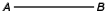
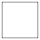
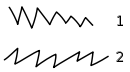
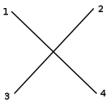

Беседа 3414 от 3877 · Беинса Дуно
Ново воюване
Отче нашъ.
Изгрѣва слънцето.
Каква бѣше темата? „Правиятъ пѫть“.
Ако вие запитате гладниятъ – защо е гладенъ, ситиятъ – защо е ситъ, мислите, че е много лесна работа. Да кажемъ, че имате точката A, лесна работа е точката A. Имате правата линия  

Сега има установени възгледи. Казва: „Има моралъ“. Запримѣръ: богатитѣ хора иматъ единъ моралъ, беднитѣ хора иматъ другъ моралъ. Богатиятъ мисли, че каквото има, ако нѣкой му го вземе – не е право. Бедниятъ мисли, че ако му платятъ повече, отколкото сѫ му казали, е право. Но ако му платятъ по-малко, отколкото му обещали, не е право. Богатиятъ, ако повече има, и бедниятъ, ако му платятъ повече, считатъ, че е право. Но ако на богатиятъ взематъ нѣщо или на бедниятъ платятъ по-малко, счита, че не е право. То сѫ относителни нѣща. Представете си, че вие сте богатъ човѣкъ и нѣма другъ на свѣта. Какъвъ законъ ще туришъ? Представи си, че ти си богатъ човѣкъ. Какъ законъ ще туришъ? Щомъ има подобни на тебе, ще туришъ законъ, но щомъ ти си самъ, какъвъ законъ ще туришъ? Казвамъ: Ти си последенъ, искашъ да ядешъ. Наядешъ се, искашъ да си почивашъ. Кое е хубавото – гладенъ ли да си или ситъ да си? Ситиятъ произлиза отъ гладния и гладниятъ произлиза отъ сития. Какъ ще го разберете? Или казано другояче: гладниятъ, като се наяде, става ситъ. Ситиятъ, следъ като мине дълго време, огладнява. Значи това не сѫ две статически положения. Гладътъ не е статическо положение и ситостьта не е статическо положение. Значи – промѣнчиво е то. Да опредѣля: ти се движишъ въ една посока, но ако се движишъ по земята, земята една равнина ли е, една плоскость ли е? Има голѣмо разнообразие. Ако се движишъ въ всѣко мѣсто, положението, въ което ти ще се изложишъ, ще се различава. Ако изучавате земята, ако вие се движите отъ южния полюсъ къмъ северния и ако се движите отъ северния къмъ южния полюсъ, вие ще видите голѣмо различие. Ако обикаляте земята около екватора, пакъ ще намѣрите голѣмо различие. Сега запримѣръ: тукъ всѣки день става день и нощь. Ако идешъ на северния или на южния полюсъ, тамъ има само единъ день. Като изгрѣе тукъ слънцето, издига се и залѣзва, заобикаля. Тамъ наоколо се върти слънцето. Северниятъ полюсъ става юженъ и южниятъ става северенъ. Слънцето се върти навсѣкѫде, върти се нагоре, излиза и пакъ слиза надолу и се изгубва. Ще кажете сега: „Кои сѫ причинитѣ?“ Ученитѣ хора обясняватъ, то е единъ дълъгъ и широкъ въпросъ. Но следъ като ти го обясни, пакъ остава непонятно. Единъ сѫботянинъ, като ми говори за сѫботата, искаше да ме убеди и азъ да празнувамъ сѫботата. Казвамъ му: Ако е за единъ свещенъ день, то е на северния полюсъ. Който иска хасълъ сѫботянинъ да бѫде, тамъ да иде. Като изгрѣе, само единъ день има. Тогава два вида сѫботяни има: едни – северняци и други – южняци. Тогава мѫжете-сѫботяни трѣбва да живѣятъ на северния полюсъ, а женитѣ – на южния. Само по единъ день ще има. По какво се отличава северниятъ полюсъ, по какво се различава земята? Запримѣръ: северниятъ полюсъ е нагоре, южниятъ е надолу по отношение на нейната орбита. Защото южната страна е по-тежка, остьта не е перпендикулярна, но е малко наклонена съ 23 градуса. Сега тия работи сѫ свързани съ нашия животъ. Казва: „Мене що ме интересува, че нашата земя е наклонена 23 градуса?“ Всѣки единъ човѣкъ не е наклоненъ и той се движи наклонено, както е наклонена земята. Така и всѣки човѣкъ е наклоненъ. Всичкото противоречие произтича отъ този наклонъ, отъ 23-тѣ градуса. 23 е число на раздора. Човѣкъ, който има 23, неговиятъ умъ, неговото сърдце – постоянна бъркотия има. Откѫде-накѫде? 2-тѣ постоянно обърква каша, а 3-тѣ примирява. Имаме постоянно примирение и размирение. Постоянно вие се смущавате, запримѣръ, за нищо и никакво. Нѣкой (е) боленъ и вие се опасявате, че ще умре. Сега казвашъ, че ти ще умрешъ. Единъ ми казва: „Ти ще умрешъ“. Казвамъ: Не съмъ умиралъ, но зная какво е умиране. Не съмъ умиралъ, нѣмамъ понятие за смъртьта. Казва: „Ще умрешъ“. Казвамъ: То е понятие само. Казвамъ: Ти умиралъ ли си? – „Не, предполагамъ“. Да предполагашъ нѣщо не е наука. Казвамъ: Сега зная, че живѣя, че ще умра – предполагамъ, че ще изчезна. Кѫде ще изчезнешъ? Когато ледътъ изчезне и се стопи, изчезналъ ли е? Когато водата изчезне и се превърне на пара, изчезнала ли е? Най-първо вие мислете за себе си. Всѣки единъ отъ васъ има понятие за себе си, че е нѣщо, но какво е – и той не знае. Запримѣръ: вие нѣмате ясна представа вие какво сте, вънъ отъ вашето тѣло. Вие сте сраснати, седите въ една кѫща, имате понятие за кѫщата, имате понятие, че каквато е кѫщата – това сте и вие. Не е вѣрно. Кѫщата ви седи на едно мѣсто, вие излизате и влизате въ кѫщата. Сега вие мислите, че тѣлото и вие се движите, но тѣлото ви не се движи, вие се движите, тѣлото ви седи на едно мѣсто. Представете си, че имате кѫща на две колела. Впрѣгнали сте единъ конь. Накѫде върви коньтъ – натамъ върви и колата. Питамъ: Кой се движи – кѫщата или вие? Кѫщата се движи съ васъ. Ако вие останете на едно мѣсто, и тя остава на едно мѣсто. Ако вие я движите, и тя ще се движи. Сега вие казвате, че материалниятъ животъ изисква нѣщо. Материалниятъ животъ не изисква нищо. Материалниятъ животъ е единъ резултатъ на онова, което ние сме направили. Азъ, човѣкътъ, се интересувамъ за доброто. Защо? Като основа, върху която може да съградя своята кѫща. Интересувамъ се отъ справедливостьта, понеже ми трѣбва материалъ, чрезъ който може да градя тази кѫща. Следователно: справедливостьта дава материалъ, съ който може да се гради. Доброто дава основа, разумното дава начинъ какъ да се движимъ. Казвамъ: Мене не ми трѣбва никаква основа, мене не ми трѣбва никакъвъ материалъ, мене не ми трѣбва никакъвъ начинъ за живѣене. Тогава питамъ: Какъвъ ще бѫде животътъ, какъ ще живѣешъ тогава, каква ще бѫде представата за живота? Казвамъ: Когато има единъ цигуларь, който има една хубава цигулка, той ме интересува самиятъ, но въ дадения случай ме интересува цигулката. Азъ ще го слушамъ, той ще ми свири – това е реално. Всички нѣща отвънъ не сѫ музикални. То сѫ само условия за музиката. Щомъ като свири, чрезъ въздуха той предава една своя идея, една истина и между мене и него се образува една вѫтрешна връзка. Че въздухътъ се движи – това не е музика. Въздухътъ е проводникъ на музиката. Презъ въздуха минава самата музика, тя става единъ хубавъ начинъ да се приеме животътъ. То е музиката, то сѫ музикалнитѣ тонове. Всѣки тонъ е проводникъ на Божественото, което хората не го знаятъ какво е. Нѣкой мисли сега, че той е музикаленъ. Може да има единъ хубавъ животъ. Добриятъ животъ съдържа въ себе си най-фината материя, добриятъ животъ съдържа (въ себе) най-фината топлина, добриятъ животъ съдържа въ себе си най-фината свѣтлина. А пъкъ тази топлина и тази свѣтлина сѫ пакъ проводници на това, което хората не го знаятъ. Свѣтлината е проводникъ. Като дойде свѣтлината, се проявява знанието. Свѣтлината е едно условие за знанието, което трѣбва да научимъ. Ако нѣмашъ свѣтлина, нѣма да имашъ знание за нѣщата. Често ние мислимъ, че изпълняваме Волята Божия. Какъ си представяме ние Господа? Азъ си Го представямъ като едно сѫщество, което никога нѣма да произведе смутъ въ ума ми, представямъ си Бога – едно сѫщество, което никога нѣма да произведе смутъ въ сърдцето ми, представямъ си Богъ – едно сѫщество, което никога нѣма да произведе смутъ въ тѣлото (ми). Следователно, туй, което смущава ума ми, туй, което смущава сърдцето ми и туй, което смущава тѣлото ми – не е Богъ. Туй, което смущава ума ми, сърдцето ми, тѣлото ми – то не е Богъ. То сме ние. Що съмъ азъ? Азъ съмъ, който може да смущавамъ ума си, азъ съмъ, който може да смущавамъ тѣлото си, азъ съмъ, който може да смущавамъ сърдцето си – нищо не съмъ азъ. Тогава вие, като се смущавате, сте обърнали работата, не разсѫждавате правилно. И вие, като смущавате сърдцето, умътъ и тѣлото си, казвате, че Господь смущава ума ви, сърдцето ви и тѣлото ви. Когато ти си спокоенъ, казвашъ: „Това съмъ азъ“. Замѣстили сте Господа. Господа сте турили на вашето мѣсто. Вие сте се поставили на мѣстото на Господа, та сте объркали свѣта. Казвашъ: „Господь живѣе въ мене“. Ако Господь живѣе въ тебе, Господь е много малъкъ. Има две нѣща важни въ свѣта – движението отъ безкрайно голѣмото къмъ безкрайно малкото и отъ безкрайно малкото къмъ голѣмото. Който разбира тия два полюса, веднага той ще нагоди живота си на земята и въ духовния свѣтъ, и въ Божествения, навсѣкѫде ще бѫде господарь на положението. Нѣма да умира, нѣма да боледува, нѣма да бѫде сиромахъ. Въ този свѣтъ ние нѣма да имаме тия противоречия, които сега имаме. Запримѣръ: свѣтътъ има голѣми смущения. Ние сме на единъ вулканъ. Всѣкога този вулканъ може да ни изхвърли нѣкѫде. Вземете единъ Лондонъ, преди години какво бѣше, пъкъ сега е развалини. Много градове сега се развалятъ. Защо се развалятъ? Идеитѣ на хората сѫ такива. Сега хората искатъ да обсебятъ земята, да станатъ господари. Има сега една борба между Бога и човѣка. Сега Господь се е запретналъ и казва: „Ти съ кого ще се боришъ, съ мене ли?“
Та сега тази война е война на духоветѣ. Чернитѣ духове сѫ хората. Свѣтлитѣ духове е Богъ въ тѣхъ. Сега една война има между Бога и човѣцитѣ. Казватъ: „Кой ще надвие?“ – Богъ. Де е Богъ сега? Свѣтли духове има между англичанитѣ, между германцитѣ, между руситѣ, между българитѣ. И отъ чернитѣ има между българитѣ, между англичанитѣ, между руситѣ, германцитѣ. Объркали сѫ се, че не може да ги познаете. Сега азъ да ги опредѣля, да имате една ясна представа. Чернитѣ човѣшки духове сѫ много красиви отвънъ, а отвѫтре сѫ много грозни. Като ги срещнешъ – отвънъ на светии мязатъ, но отвѫтре съ черни, като го погледнешъ – страшилище. Но той е скритъ въ маската. Ти го виждашъ, меко говори. На свѣтлитѣ духове маскитѣ сѫ отвънъ грозни, много страшни, но отвѫтре, като смъкнешъ маската, сѫ ангели. Сега вие се смущавате като срѣщате грознитѣ хора. Казвате: „Той е дяволъ“. Пъкъ той отвънъ е такъвъ, а отвѫтре е красивъ човѣкътъ. А пъкъ азъ казвамъ обратното: Дяволътъ е ангелъ отвънъ, ангелътъ е дяволъ отвънъ. Отвънъ грозното е Божественото, а красивото отвънъ е човѣшкото. Отвѫтре красивото е Божественото, а отвѫтре грозното е човѣшкото. Обратни сѫ процеситѣ.

Та казвамъ: Ако вие въ васъ постоянно не се подмладявате и ако вие постоянно остарявате – вие сте човѣкъ. Човѣкъ е този, който постоянно се подмладява и постоянно остарява. Какъ остарява? Знае да придобива. Стариятъ човѣкъ, който има знание, не е старъ. Младиятъ човѣкъ, който не расте и не придобива сила, не е младъ. Младиятъ човѣкъ постоянно трѣбва да придобива сила, стариятъ трѣбва постоянно да придобива знание. Тогава знанието и силата, като се съединятъ, образуватъ живота, тогава животътъ въ свѣта се явява. Вие питате: „Вѣрвамъ ли въ Бога?“ Азъ Господа Го виждамъ въ една моя мисъль да коригира нѣщата. Въ една моя постѫпка Господа Го виждамъ, казва: „Тази постѫпка не е права“. Въ едно мое отношение къмъ нѣкои хора – къмъ едни съмъ разположенъ, къмъ други не съмъ разположенъ. Казва: „Разположенъ си, защо?“ Този човѣкъ е богатъ, не че не го обичамъ, но за парицитѣ. То е политика. Има знание. То е политика. Но политиката не е животъ. То е хубаво, не е лошо. То е хубава дреха. Та казвамъ сега: Трѣбва да се образуватъ ония, правитѣ отношения между хората. Сега двама силни хора се борятъ. Нали сега се бориха единъ ромънинъ и единъ българинъ. Вестницитѣ нищо не говорятъ, само едно малко антрефиле. Когато Данъ Коловъ се бори, много го разгласиха. Тогава политическата констатация бѣше друга, сега политическата констатация е друга. Борятъ се 47 минути и борбата свърши. 47 минути се хващатъ за рѫце, крака, глава, за туй-онуй, че най-после българинътъ хваща ромънина, дига го и го блъска въ земята. Свърши се работата. 47 минути хване го, той се изплъзне, хване го за врата, той се изплъзне. После онзи го хване, тури го отдолу, мачка го. Знаете ли защо го хваща за гърлото? Тамъ е дихателната система, като го стисне за гърлото – отслабне. Онзи мръдне съ главата, освободи си главата. Всички вие сте въ положението на Данъ Коловъ и на този Ферещановъ. Всѣки човѣкъ въ свѣта се бори. Борба има. Борите се сами съ себе си. Дойдешъ нѣкѫде, искашъ да проявишъ нѣкой моралъ, борба има. Нѣкой пѫть съблазънь имашъ. Дойдешъ нѣкѫде, пари има или видишъ плодоветѣ. Ако идете въ Америка, хората минаватъ покрай градинитѣ и никой не кѫса плодове. Въ България, ако минете покрай пѫтя, всички плодове сѫ обрани, дори плодоветѣ паднали на земята не ги взематъ въ Америка. Българи, като минаватъ въ Америка, ще ги познаете. Като минатъ – откѫснатъ си. Българинътъ е много практиченъ, казва: „Защо да го оставя да гние на земята? Трѣбва да се яде“. Три понятия трѣбва да имате въ свѣта. За да добиешъ сила въ свѣта, трѣбва да имашъ едно здраво тѣло. Безъ здравото тѣло, силата не идва. За да бѫдешъ добъръ, трѣбва да имашъ сърдце, което да функционира добре. За да бѫдешъ уменъ, трѣбва да имашъ едно разбиране за свѣтлината. Че ако ти допуснешъ каква и да е дисхармония, ти нарушавашъ онзи законъ на вѣчната, Божествената хармония. Ти на земята не можешъ да се подигнешъ. Защото на земята, за да се подигнешъ, за да станешъ ученъ човѣкъ, трѣбва ти свѣтлина. За да бѫдешъ ученъ, трѣбва ти една хубава глава. За да бѫдешъ едно гениално сѫщество, трѣбва ти едно добро сърдце. За да можешъ да постигнешъ своя идеалъ въ мисъльта си, трѣбва ти едно здраво тѣло. Казвамъ: Здравината на на нашитѣ тѣла зависи отъ нашата мисъль и отъ нашитѣ чувства. Мисъльта внася свѣтлина. Тя е необходима. Безъ свѣтлина нищо не става въ свѣта. Безъ топлина нищо не става въ свѣта и безъ сила нищо не става въ свѣта.
По нѣкой пѫть азъ за любовьта говоря, но любовь нѣма на земята. Не може да има любовь. На земята има отражение на любовьта. Запримѣръ: вие влѣзете въ единъ салонъ, дето има изложени картини на разни мѣстности, но тия картини нѣматъ никаква реалность. Имате нарисувани картини, но това не е реалностьта, това е отражение на нѣкаква реалность нарисувана. Колкото и да е гениална тази картина, ни най-малко не съответствува на онова, което е въ природата. Даже и при най-добрата фотография пакъ е така. Мене като сѫ ме фотографирали, гледамъ – много страшенъ ме фотографиратъ, азъ не се познавамъ, турятъ ми лоша маска. Фотографиратъ ме по сѫщия законъ, страшенъ ме рисуватъ. Турятъ ми отвънъ маска. Казвамъ: Отвѫтре съмъ добъръ, отвънъ съмъ страшенъ. Гледамъ нѣкого като го фотографиратъ – отвънъ го ретуширатъ, направятъ го красивъ. Казвамъ: Този е отъ чернитѣ. Сега това не трѣбва да го навиете на пръста си. Човѣкъ като носи една маска, той е свободенъ човѣкъ. Ти, като не носишъ маска, не си свободенъ. Всичкитѣ хора на земята носятъ маски, нѣма нито единъ безъ маска. Затова сѫ свободни. Утре, като замине отъ свѣта, кой ще го знае? Представете си сега нѣкой пѫть, ако азъ като изяснявамъ нѣщата, вие ще си извадите едно заключение съвсемъ странно. Представете си единъ барабанчикъ бие барабана, представете си тази кожа е одрана отъ нѣкое животно, (което) има съзнание. Като биятъ барабана, мисли, че нея биятъ. Какво е направила, като биятъ барабана? Голѣмото зло е направено, кожата е одрана отъ гърба на животното, турена е на единъ барабанъ. Барабанчикътъ я бие съ две тояжки. Казвамъ: Какво престѫпление прави барабанчикътъ? Какво наказание ще му турите, че той бие барабана? Какво наказание ще турите на единъ човѣкъ, който би ви казалъ: „Ти не си уменъ човѣкъ“ или ти каже: „Ти си лошъ човѣкъ“. Какво наказание ще турите сега? Най-първо туй, което казва, вѣрно ли е? Какво (се) подразбира, че е лошъ човѣкъ? Че съмъ енергиченъ човѣкъ. Казвамъ нѣкому: Слушай, не ме закачай, не ме закачай. Знаешъ ли, като те блъсна… Кой е добриятъ човѣкъ? Блъснешъ го този човѣкъ, той казва: „Благодаря“. Ти го ударишъ, той казва: „Заповѣдайте“. Ти ударишъ две плѣсници. Щомъ ти ударишъ две плѣсници, ти минавашъ за добъръ човѣкъ.
Единъ индуски учитель пратилъ единъ отъ своитѣ ученици при единъ воененъ. Казва: „Ще идешъ, ще му ударишъ една плѣсница. Ще идешъ при другъ, който се моли, и на него ще ударишъ една плѣсница. И на единъ философъ, който философствува, и на него ще ударишъ“. Отива при военния и като му ударилъ една плѣсница, той му ударилъ две, прекатурилъ го. Показалъ му какъ се бие. Онзи таманъ вдигналъ рѫцетѣ да се моли, и този ученикъ му ударилъ една плѣсница. Рѫцетѣ му потреперали, но понеже се молилъ на Господа, не го ударилъ. Отишълъ при философа, който така се занимавалъ съ книгитѣ си, че когато го го ударилъ, той хичъ не отдѣлилъ вниманието си, изучава човѣкътъ. Връща се при учителя си и му разказва. Казва: „Какъ е?“ Казва: „На военния ударихъ една плѣсница, пъкъ той ми удари две. Онзи, който се молѣше, ударихъ му една плѣсница, само му потрепераха рѫцетѣ, но не ме удари. А като ударихъ философа, той даже не обърна внимание“. „Кой, казва, обичаше най-много?“ – „Онзи, който хичъ не обърна внимание“. Сега вие идете въ свѣта. Азъ правя сравнение. Вие ударите на военния една плесница, (той) удари ви две. Кривъ ли е човѣкътъ, че ходишъ да го биешъ? Че той си върши своята длъжность. Чудни сѫ, когато казватъ, че това не е право. Че кажете имъ кой е правъ въ свѣта. Онзи, който отива да сѣче едно дърво, правъ ли е? Като сѣче дървото, правъ ли е? Онзи, който изѣде единъ конь или изѣде едно агне, правъ ли е? Казвамъ: Де е престѫплението въ свѣта? Има едно право. Азъ го опредѣлямъ така, казвамъ: Всѣко нѣщо въ свѣта, което става безъ любовь, е престѫпление. Всѣко нѣщо въ свѣта, което става съ любовь, то е Божие благословение. Всѣко нѣщо, което става по законъ, е Божия мѫдрость, то е благословение. Всѣко нѣщо, което става безъ мѫдрость, то е престѫпление. Та казвамъ: Тамъ, дето любовьта не взема участие и дето мѫдростьта и истината не взематъ участие, тия постѫпки сѫ престѫпление. А тамъ, дето любовьта взема участие, дето мѫдростьта и истината взематъ участие, то е Божие благословение въ свѣта. Заради менъ е така, то е моето правило.
Да кажемъ тия двамата борци, дето се бориха, ако вие като българи искате българинътъ да победи, но ако българинътъ е силенъ – той ще победи. Ако онзи ромънецъ е силенъ, а българинътъ е слабъ, тогава? Ти ще се питашъ: „Защо да не победи българинътъ?“ Защото е слабъ. Така е споредъ мене. Българинъ е онзи, на който душата е пълна съ любовь. Българинъ е онзи, на който умътъ е пъленъ съ знание и мѫдрость. Българинъ е онзи, на който тѣлото е пълно съ истина, съ свобода. Той е българинъ. И англичанинътъ е сѫщиятъ, и германецътъ е сѫщиятъ, който и да е – всѣки човѣкъ, който има тия качества, той е човѣкъ, той е българинъ. Който ги нѣма, не е българинъ. Казвамъ: Тази трѣбва да бѫде вашата представа. Всѣки човѣкъ, който нѣма въ себе си любовьта, той не е никакъвъ, нѣма никакво бѫдеще. Само ония хора иматъ бѫдеще, които иматъ любовьта. Бѫдещиятъ свѣтъ е за хората на любовьта, не настоящата любовь. Заради насъ, хората, ни трѣбва спокойствие на ума.
Сега се биятъ хората, биятъ се германци и руси. Защо? Не можеше ли безъ бой? Можеше. Щомъ не може безъ бой, тогава съ бой. Азъ ще ви приведа единъ примѣръ: българитѣ, следъ като изтъчатъ плата, нали го валятъ. Представете си, че валѣнето това е бой, защото като турятъ плата – тамъ има две тупалки, тупатъ го, обръщатъ го и най-после платътъ уплътнява. Можеше ли безъ да се бие този платъ? Тъй, както е изтъкано, и безъ бой можеше. Но като е валѣно, е по-гѫсто, по топли. Хората, като се биятъ, по-топли ще станатъ. И безъ бой може. И съ бой може, и безъ бой може. То зависи споредъ разбиранията на хората.
Помнете едно въ свѣта, че вие не сте фактори на нищо. Всичко въ свѣта, което става, е точно отмѣрено, разумно, то е единъ Божественъ планъ, който туря всичкитѣ народи да извършатъ Неговата воля. Нѣма народъ въ свѣта – тѣ не го знаятъ това – всички служатъ. Англичанитѣ мислятъ за себе си, руситѣ мислятъ за себе си, българитѣ мислятъ за себе си, но въ този смисълъ има единъ Божественъ планъ. Българитѣ ще служатъ на Господа и англичанитѣ, безъ да знаятъ, и тѣ всички служатъ на Господа. Казвамъ: Не се пристрастявайте, дръжте въ себе си Божественото, считайте всичкитѣ народи въ свѣта като синове Божии. Господь, като съгрѣши единъ синъ, хване го за ухото. Еврейскиятъ народъ, който бѣше избранъ народъ, имаше 36 хиляди обещания. Колко пердахъ яде и още яде. Сега мислите: „Объркана работа“. Върху една бѣла книга ще се пише. Вие искате да живѣете въ свѣта безъ страдание, но самиятъ животъ на земята изисква. Ако ние не страдаме, отъ насъ нищо нѣма да излѣзе. Сега казвате, че културата седѣла, че единъ килограмъ грубо желѣзо струва 10 лева. Ако това желѣзо го направите на тънки жици и се продаде, ще струва 25 хиляди лева. Следъ като изпредете това желѣзо на тънки жици, че го продадете за 25 хиляди лева, какво сте допринесли на желѣзото? Самото желѣзо какво е придобило?
Каква е Волята Божия въ свѣта? Вие вземате участие въ войната, искате едни да победятъ отъ тѣзи, които се биятъ, искате едни да победятъ. Че то сѫ хиляди и милиони хора, които иматъ майки и бащи, плачатъ. Какво допринася това въ свѣта? Ние не можемъ да предотвратимъ нѣщата, не е въ нашата сила, не е въ нашата сила ние да спремъ хода на тия събития. Тогава какво трѣбва да се прави? Ще кажемъ: „Господи, да бѫде Твоята воля“. Всѣки единъ отъ васъ трѣбва да знае кой е на правата страна. Не да предполага само кой е на правата страна. Богъ е на страната на слабитѣ. Бащата на земята най-първо започва съ Христовия законъ. Като дойде детето, по Христовото учение Го приема, милва го по любовь. Като стане детето на 5–6 години, дойде законътъ, гледашъ детето започне да пѣе. Наложатъ това дете бащата и майката, казватъ му: „Ти ще се подчинявашъ на баща си и майка си“. Единъ день тия деца станатъ по-силни отъ бащата. Разправяше ми единъ баща, казва: „Хванаха ме двамата ми синове, държатъ ме и жена ми ме налага. Единъ ме държи за главата, другъ за краката, а жена ми ме налага. Ти, ако си, казва, на моето мѣсто, какво ще правишъ?“ Рекохъ: Ще търпя. – „И азъ съмъ отъ тия“. Пита ме нѣкой: „Ти защо не си жененъ?“ Защото не искамъ да ме биятъ. Той после ме пита: „Ти защо не се ожени?“ Не искамъ да ме биятъ. Онзи, който се жени, трѣбва да знае ще го биятъ или не, да е ясновидецъ. Ако синоветѣ, които ще дойдатъ, ще го биятъ – да се откаже. Ако нѣма да го биятъ, ако ще живѣятъ по любовь – тогава да се ожени. То е само единъ примѣръ. Азъ го вземамъ, но то е изключение. Не че всички били, само едного били. Толкозъ бащи има, които никакъ не сѫ бити. Тарасъ Булба, като пратилъ синоветѣ да се учатъ, като се върнали, искалъ да знае колко се подобрили. Най-първо по-младия синъ набилъ, дошълъ да голѣмия синъ, но той набилъ баща си. Казва бащата: „Ти си се научилъ“. Бащата удря, и синътъ удря. Той казва: „Така те искамъ, да удряшъ“.
Въ свѣта трѣбва да се боримъ. Да удари човѣкъ съ любовь и да се търкули. Да удари човѣкъ съ знание и да се търкули. Търкуляне – значи човѣкъ да се движи. Азъ по нѣкой пѫть не харесвамъ. Азъ съмъ представѣлъ работитѣ и вие казвате: „Учительтъ говори за любовь“. За любовь говоря, но азъ правя наблюдение – никѫде нѣма любовь. Гледамъ въ тревата, две сѫщества се хванали, давятъ се. Гледамъ онзи паякъ хваналъ една муха, тя бръмчи, моли се. Той казва: „Така е предопредѣлено, ти трѣбва да се жертвувашъ“. Казвамъ на паяка: Защо я хвана? Той казва: „Моя работа“. Рекохъ: Не е право. Казва: „Не е право“. Законъ има, какво търси тукъ? Казвамъ: За мой хатъръ не можешъ ли да я пуснешъ? Казва: „Че кой си ти?“ Азъ съмъ по-силенъ отъ тебе. Ако ти не ме послушашъ, азъ ще ти покажа азъ кой съмъ. Казва: „Че ти по-голѣмъ ли си отъ паяцитѣ?“ Много по-голѣмъ. Ти ще ме слушашъ. Ако не – имамъ единъ законъ. Казва: „Говоришъ ли ти истината или се шегувашъ? Да не би ти да си голѣмъ паякъ?“ Азъ съмъ най-голѣмиятъ паякъ. – „Щомъ си най-голѣмиятъ паякъ…“, и той започна да кѫса мрежата и остави свободна мухата. Казва: „Бела да нѣмамъ“. Вие какво ще разберете сега? Вие по човѣшки, ако го разбирате. Но има единъ законъ. На паякътъ може да му предамъ това не съ думи. Азъ мисля и пращамъ известни вълни, казвамъ: Пусни мухата. Пращамъ известни вълни и произвеждамъ една дисхармония. Като пращамъ тия вълни, той започва да ги чувствува, спре се най-първо, най-първо искаше да я оплете. Като пратя мисъльта, той се спре. Дойде до едно мѣсто, че вече тия мои влияния не може да ги издържи или той бѣга отъ паяжината, или започва да кѫса тази паяжина. Щомъ се ослуша, азъ се спра да мисля. По нѣкой пѫть нищо не казвамъ и той изѣде мухата, наблюдавамъ го какъ я яде. Виждалъ съмъ паяци какъ я оплитатъ, тя бръмчи, той я оплете, дойде до врата ѝ, изпие сока. Следъ като я изѣде, нѣма нищо, откѫсне я, пакъ направи паяжината – да нѣма престѫпление.
Сега да оставимъ паяцитѣ. Ние какъ трѣбва да живѣемъ? Тамъ седи философията. Всѣки единъ човѣкъ трѣбва да бѫде единъ добъръ проводникъ на Божественото. Всѣки единъ човѣкъ трѣбва да бѫде проводникъ на духовното. И всѣки единъ човѣкъ трѣбва да бѫде проводникъ на човѣшкото. То сѫ три нѣща, за да се изпълни Волята Божия. Трѣбва да бѫдемъ проводници на Божествената енергия, на духовната енергия и на човѣшката енергия. На човѣшкото, значи на човѣшката мисъль. На Божествената любовь и на Божествената мѫдрость всички трѣбва да бѫдемъ проводници, за да видимъ каква е Волята Божия. Тогава ще поправимъ живота си и животътъ ни ще бѫде като днешния день ясенъ. /Вънъ е ясно и слънчево/. Ако има престѫпление, ще има облаци. Ако има по-голѣми престѫпления, ще се явятъ дъждове и бури. Ако живѣемъ както трѣбва, Той ще превърне всичко за добро. Помнете едно нѣщо: Ние се намираме въ една преходна епоха въ свѣта. Стариятъ свѣтъ си отива съ всички свои порядки. Нашата мисъль, като едно дете, е била малка, но щомъ като стане на 21 години казва: „Не съмъ младъ, но като възрастенъ човѣкъ ще живѣя“.
Трѣбва да знаемъ, че всичкитѣ хора страдатъ. Не ние страдаме. Единственото сѫщество, което страда – това е Богъ. Ние се мѫчимъ, гнѣвимъ. Туй, което страда и съжалява въ насъ, казва: „Създадохъ тия хора, дадохъ имъ всички блага, тѣ не оценяватъ и изпитватъ моето търпение“. Той не е отъ слабитѣ, може да ги смаже, но Той търпи. Той страда и казва: „Станете умни, не ме предизвиквайте. Ако азъ излѣза вънъ отъ себе си, да стана като васъ, ще ви изпопердаша синца ви“. Седи Той и ние казваме: „Слабо сѫщество е онова, което страда“. То е силното въ свѣта. Това, което не страда, е слабо сѫщество. Онова, което страда, то е силното въ свѣта. Онова, което не страда, то е слабото. Дотогава, докато ние страдаме, ние сме силни. Дотогава, докато ние мислимъ, ние сме силни. Дотогава, докато ние работимъ, ние сме силни. Щомъ не работимъ, ние сме слаби. Щомъ не мислимъ, ние сме отъ слабитѣ. Щомъ не страдаме, ние сме отъ слабитѣ. Вие имате понятие, вие не трѣбва да бѫдете отъ старитѣ хора. Ние трѣбва да влѣземъ въ страданията, да станемъ съучастници на Неговитѣ страдания.
Тази война, която става сега, е за добро. Не че самата война е добро, но туй зло, което сѫществува, не може да се изправи по другъ начинъ. На тия хора две хиляди години се проповѣдва, не разбиратъ. Иде сега войната. Казватъ: „Не може ли безъ война?“ Сега щомъ се биятъ – не може. Следъ като се биятъ, всичкитѣ набрани енергии като изчезнатъ, ще се спре войната. Хората се биятъ съ желѣзо. Ако нѣма този предметъ, войната ще престане. Единъ день като нѣматъ пушки, като нѣматъ барутъ, като нѣматъ взривни вещества, аероплани, като нѣматъ автомобили, танкове, съ какво ще се биятъ? Единъ день, ако Господь имъ вземе рѫцетѣ, ако имъ вземе краката, ако имъ вземе очитѣ, ако имъ вземе сърдцата, съ какво ще се биятъ? Днесъ се биятъ, защото иматъ умъ. Ако Богъ имъ вземе всички тия работи, съ какво ще се биятъ? Та казвамъ: Азъ не съмъ противъ войната. Има една война, която е по любовь. Всички воюватъ. Азъ съмъ противъ войната, която е безъ любовь. Една война, която ще произведе едно по-голѣмо благо, отколкото ако не се биятъ хората, азъ съмъ за тази война. Но една война, която ще произведе повече нещастие, отколкото ако хората не се биятъ, азъ съмъ противъ войната. Азъ съмъ противъ всѣка постѫпка, която произвежда повече страдание, а по-малко благо. Азъ съмъ противъ всѣка постѫпка, която ще произведе повече страдание, а по-малко блага. Азъ съмъ за всѣка постѫпка, която ще произведе повече благо, отколкото повече страдание. Казватъ: „Да се не биемъ“. Това много общо казано. Ако една война ще произведе по-голѣмо благо за една свобода за цѣлото човѣчество – да се биемъ. Азъ съмъ противъ тази война, която ни разваля. То е вече едно опредѣление. То е разумното въ свѣта. За пръвъ пѫть войната не сѫществува. Тя сѫществува и за напредналитѣ сѫщества, и за ангелитѣ. Ангелитѣ, и тѣ воюватъ сега, и хората воюватъ. Казвамъ: Всички трѣбва да воюваме съ любовь. Всички трѣбва да воюваме съ знание, съ мѫдрость. Всички трѣбва да воюваме съ истина и за свобода. Туй, което носи свобода, туй, което носи истина, туй, което носи мѫдрость, което носи знание, което носи животъ въ себе си – ние сме за това.
Казвамъ: Сега не бѫдете пристрастни, не спорете кой трѣбва да победи. Ние сме за победата на любовьта въ свѣта. Ние сме за победата на мѫдростьта въ свѣта. Ние сме за победата на истината въ свѣта. Ние сме за победата на живота въ свѣта. Ние сме за победата на знанието въ свѣта. Ние сме за победа на свободата въ свѣта. Ние сме за доброто ядене, ние сме за доброто дишане и за доброто мислене. Максими трѣбва да имате. Всички трѣбва да ядемъ, всички трѣбва да дишаме, всички трѣбва да мислимъ. Благата, които Богъ ни далъ, ние ще ги оставимъ, единъ день ние ще напуснемъ земята, ще се явимъ при Господа. Какво ще Му занесемъ? Напуснете вашитѣ стари възгледи. Бѫдете вѣрни на любовьта, бѫдете вѣрни на мѫдростьта, бѫдете вѣрни на истината, вѣрни на знанието, вѣрни на свободата, вѣрни на живота, вѣрни на доброто ядене, вѣрни на доброто дишане, вѣрни на доброто мислене. Това е разрешението. Всѣки единъ трѣбва да го приложи, да направи нѣщо отъ себе си. Да бѫдемъ отъ тия, които ще оправятъ свѣта. После, не се произнасяйте за всички тия водачи на човѣчеството. Не мислете лошо. Гледайте онзи капитанъ, който рѫководи единъ параходъ, каквото знае – човѣкътъ ще направи. Безъ него е още по-лошо.
Та казвамъ: Онѣзи, които рѫководятъ сѫдбинитѣ, които сѫ турени надъ сѫдбинитѣ, разбиратъ работата. Васъ, ако турятъ, какъ ще оправите България? Мислите ли, че е лесно да се оправи България? Да координира тия хора, тѣхнитѣ интереси? То е много трудна работа да ги организирашъ. Но трѣбва да внесемъ нѣщо. Вижъ азъ какво разбирамъ. Съвременното човѣчество е затворено въ единъ салонъ, нѣма въздухъ. Ние ще дойдемъ да разбиемъ тия прозорци, да влѣзе въздухъ. Всѣки трѣбва да стане проводникъ, да влѣзе една енергия на любовь въ човѣчеството, всѣки трѣбва да стане проводникъ, да влѣзе една енергия на Божията мѫдрость въ свѣта. Да станемъ проводници на енергиитѣ на Божията истина въ свѣта. Проводници се изискватъ. Казваме: „Господь ще дойде отгоре“. То е механическо схващане. Той ни направилъ по образъ и подобие на себе си, за да работимъ сега заедно. Де е Неговиятъ образъ сега? Гледамъ нѣкои тукъ сте се влюбили, всѣки си има по една възлюблена. Мѫжътъ, който хваналъ своята възлюблена подъ рѫка – хубаво е. Ако азъ се влюбя само въ единъ косъмъ, търся само него, какво щѣше да стане съ другитѣ? На главата си имамъ 25 хиляди, всички трѣбва да ги обичамъ. Казва: „Моята жена“. Жена ти, като замине, кѫде ще я намѣришъ? Жената кѫде ще намѣри своя възлюбленъ? Обичашъ тия пари. Като ги дадешъ на бакалина, кѫде ще ги намѣришъ? Чудни сѫ хората. Единственото реално нѣщо, което трѣбва да свършимъ, какво е? Единственото реално въ свѣта – това е само Богъ. Богъ въ любовьта, Богъ въ мѫдростьта, въ знанието, въ свѣтлината, Богъ въ свободата, въ истината, въ правото въ свѣта.
Казвамъ: Всички сега трѣбва да бѫдете вѣрни на Господа. Единъ приятель иде при мене. Всички иматъ мнение. Азъ съмъ за всѣко хубаво мнение. Когато едно дете прави нѣщо хубаво, радвамъ се. Когато едно дърво дава хубавъ плодъ, радвамъ се и на него. Радвамъ се на всичко въ свѣта. Като тече рѣката, пакъ се радвамъ. Всичко въ свѣта е за добро. Всичко въ свѣта носи добро. Казвамъ: Да станемъ проводници на Божественото. Не по закона на насилието, защото насилието сѫществува въ свѣта. Ако поддържаме насилието, ние не носимъ нищо ново въ себе си. Турете закона. Отвънъ нека има насилие, отвѫтре въ васъ да нѣма никакво насилие. Да имаме единъ животъ безъ насилие. Искамъ отвѫтре да бѫдете силни. Казвамъ: Който обича, е силенъ. Който знае, е силенъ. Който е свободенъ, той е силенъ. Който е здравъ, той е свободенъ. Желая на синца ви отвѫтре да бѫдете свободни, а отвънъ да бѫдете ограничени. Отвънъ ние не можемъ да бѫдемъ свободни. На физическото поле никой не е свободенъ. Само въ Бога е свободата. Щомъ е Богъ вѫтре въ тебе, ти си свободенъ. Съ Бога сте свободни, безъ Бога не сте свободни. Свободата опредѣля. Никой човѣкъ, въ когото не прониква Божията любовь, Божията мѫдрость и истина, той е ограниченъ човѣкъ. Този, въ когото Богъ прониква, Богъ ще мисли дали той знае или не знае, ще започне неговата свобода. Той (е) силенъ човѣкъ. За да бѫдемъ силни, непремѣнно трѣбва да знаемъ. Да бѫдемъ проводници. Като се срѣщаме, всѣки да вижда въ другия проявлението на Бога. Дето го видимъ, да имаме всичкото уважение и почитание. Тамъ, дето е човѣшкото, може да си каже мнението. Азъ съмъ за критиката. Постѫпвашъ по човѣшки. Казва: „Азъ трѣбва да му платя“. Казва: „Защо го биешъ?“ – „Има да ми плаща. Ще го бия, понеже закѫснѣлъ да изплаща“. Казвамъ: Хубаво, но остави го, на – мене удари. Кой отъ васъ би направилъ това? Христосъ, Който дойде да спаси свѣта, защо остави гърба си да Го биятъ? Казва: „Нѣмамъ ли власть да поискамъ 12 милиона ангели да ме освободятъ?“ Но какъ ще се спаси свѣтътъ? Ангелитѣ не сѫ слаби сѫщества. Въ Стария заветъ имаме единъ ангелъ, който се явява една вечерь и поразява 15 хиляди. Колко ангели се изискватъ, за да очистятъ българитѣ?
Нѣма по-страшно орѫжие отъ орѫжието на любовьта. Нѣма по-страшно орѫжие отъ орѫжието на знанието, на Божията мѫдрость. Нѣма по-страшно орѫжие отъ орѫжието на истината. Най-страшнитѣ орѫжия сѫ тѣ. Казвамъ: Въорѫжете се всички. Не да кажемъ сега: „Ще сѫдимъ, нѣма какво да правимъ“. Ще туримъ ума си на работа. Ще туримъ сърдцето си на работа. Това е, което Господь иска отъ насъ сега.
Това е животъ вѣченъ да позная Тебе Единнаго Истиннаго Бога и Христа, Когото Ти Си пратилъ.
ХХ година
37. Лекция на Общия Окултенъ класъ
25 юний, 1941 год., Срѣда, 5 ч.с.
Изгрѣвъ.